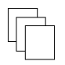
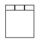
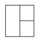

17
Window Commands
This chapter describes the Window commands. The commands are presented in alphabetical order.
- add_button
- arrange_window
- busy_button
- hide_gui
- new_window
- remove_button
- remove_tool_bar
- restore_default_configuration
- show_gui
- window_graphics_type
add_button
add_button{ -names_name-commands_cmdText| -separator } [ -toolbars_name] [ -indexi_position] [ -icon_labels_label[ -fonts_fontName] [ -sizei_size][ -icons_index] ] | -icon_files_fileName] [ -force_widthi_pixel-force_heighti_pixel]
Adds a button or a vertical separator to a toolbar.
Arguments
Example
The following command adds an icon button labeled TDSP to the User-defined toolbar. When you click the TDSP button, the tdsp design will be opened.
add_button -name load_tdsp -command "read_db -lib tdsp_library -cell tdsp -view layout" -icon_label TDSP
The following command adds a blue icon button to the Bold toolbar. When the button is clicked, highlight sets are created to use with remaster_via.
add_button -name add_highlights -command "add_highlight -color red -name NEW_VIAS_PUSHED; add_highlight -color blue -name NEW_VIAS; add_highlight -color purple -name UNFIXED_VIAS" -icon 2 -toolbar Bold
arrange_window
arrange_window [ -cascade | -tabify | -tile ]
Selects the format for arranging artwork windows in the workspace.
Arguments
|
Displays windows in overlapping cascade format.

|
|
|
Displays one window at a time in the workspace. Windows are tabbed.

|
|
|
Displays multiple non-overlapping windows in the workspace.

|
Example
arrange_window -cascade
Arranges artwork windows in overlapping cascade format.
Related Information
|
Window—Arrange—Tabify |
busy_button
busy_button
{-hide | -show}
Hides or shows the Status/Interrupt (busy) button in the Graphical User Interface. By default, the busy button is visible and updated periodically to show the status of the current operation. If you are running interactively over a slow network, it can be helpful to temporarily hide the busy button for faster processing.
Arguments
Example
The following command hides the busy button.
busy_button -hide
hide_gui
hide_gui [ -aerial_view ] [ -color_map_legend ] [ -command_line ] [ -lods ] [ -net_manager ] [ -sequencer ] [ -transcript ] [ -view_contexts ]
Hides the specified auxiliary windows in the GUI.
Arguments
Example
This command hides the aerial view.
hide_gui -aerial_view
Related Information
|
Window—Aerial View |
new_window
new_window
[ -window_id i_windowID ]
Creates a new artwork window with the cellview in the active window or the given window.
Arguments
Value Returned
|
A syntax error occurred or the cellview cannot be determined because the given or active window does not exist. |
Example
The following command creates a new artwork window with the cellview in the active window.
new_window
Related Information
remove_button
remove_button -toolbars_name-indexi_position
Removes a button from a toolbar.
Arguments
Example
The following command removes the second button from the User-defined toolbar.
remove_button -toolbar User-defined -index 1
Related Information
remove_tool_bar
remove_tool_bar-names_name| -empty_bars
Removes the specified toolbar or all toolbars that have no buttons.
Arguments
Related Information
restore_default_configuration
restore_default_configuration
Resets the size and placement of the main Space-based Router and Chip Optimizer window and its dock windows, including the toolbars, to default values.
Arguments
Related Information
show_gui
show_gui [ -aerial_view ] [ -color_map_legend ] [ -command_line ] [ -lods ] [ -net_manager ] [ -sequencer ] [ -transcript ] [ -view_contexts ]
Displays the auxiliary areas in the GUI.
Arguments
Example
This command displays the layer/object display panel and the aerial view.
show_gui -lods -aerial_view
Related Information
|
Window—Aerial View |
window_graphics_type
window_graphics_type
[ -window_id i_windowID ]
Returns the graphics type of the given window. This is useful if you have changed the gui.graphics environment variable directly or in the Session Options form (Edit—Preferences—Session) mid-session and want to determine with certainty the type of a window. By default, the type of the active window type is returned.
Arguments
|
Gets the graphics type of the specified window. If this argument is not given, the active window is used. |
Value Returned
|
Is the graphics type of the window. If you started up Space-based Router and Chip Optimizer with the |
Return to top